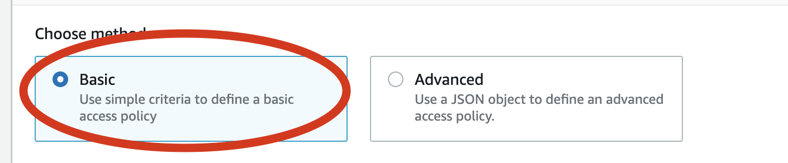
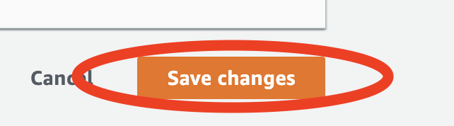
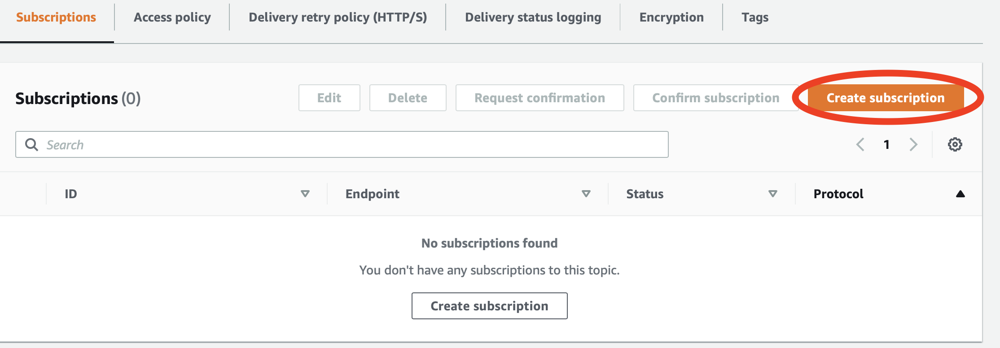
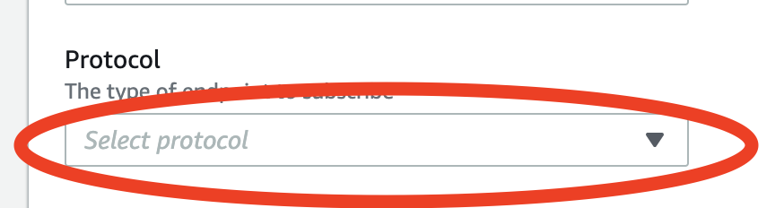
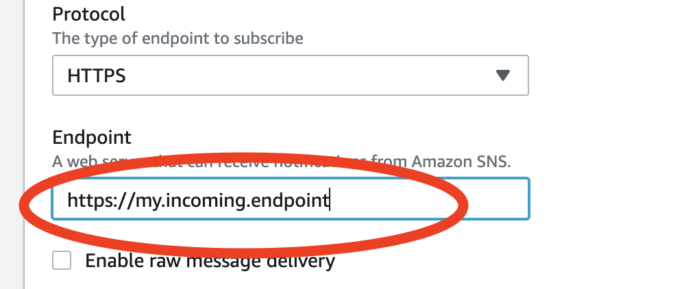

Setting Up For Updates
Setup Using An AWS SNS Topic
The MoxiWorks Platform Realtime Stream currently offers updates using Amazon’s Simple Notification Service (SNS). If you are interested in receiving MoxiWorks Realtime Stream Updates using a different method, please talk to your MoxiWorks Platform Representative.
SNS: Configuring For MoxiWorks Platform Realtime Stream Updates
In this section getting your Realtime Stream set up using SNS is covered. Use this to get your incoming MoxiWorks Realtime Stream Updates started. Once you’ve set up your SNS feed to receive updates from the MoxiWorks Realtime Stream you can then configure handling of those messages to best serve your needs. You might configure MoxiWorks Realtime Stream Updates to be sent to your servers or to go to an SQS queue – ensuring you never miss an update. Combining MoxiWorks Realtime Stream Updates with Amazon SNS gives you the flexibility to handle incoming data any way that you need.
Creating an SNS Topic for Realtime Stream Updates
Overview
To receive MoxiWorks Platform Realtime Stream Updates via SNS, first you’ll need to create an SNS topic in your AWS Console and give permissions to MoxiWorks to publish to that SNS topic. This section goes over setting up your SNS Topic. Later, we’ll go into getting data from your SNS Topic to your server.
Production MoxiWorks AWS User: arn:aws:iam::619293852110:user/pubsub-pr
QA MoxiWorks AWS User: arn:aws:iam::619293852110:user/pubsub-qa
Quickstart
If you’re familiar with setting up an SNS topic and giving permissions to a specific user for publishing to that topic, all you’ll need to do is:
1) Give publishing permissions for your topic to the MoxiWorks Platform Stream User in AWS. The platform stream user ID is shown to the right for QA and production environments.
2) Set up a subscription to receive incoming messages from that topic (HTTPS endpoint, SQS, etc.)
3) Let your MoxiWorks Platform Partner Services Representative know what the SNS topic ID is and whether the topic is for QA or production updates.
SNS Configuration Procedure
If you need a little more help getting the SNS topic and subscription set up, we’ve created an instructional procedure that you can follow.
To set up MoxiWorks Platform Realtime Stream SNS Topic using the AWS SNS Console use the following procedure.
1) From your web browser, go to the Amazon SNS console at console.aws.amazon.com, to open the Amazon SNS Topics dashboard.
2) On the Amazon SNS Topics dashboard, click the Create topic button.

3) From the Details section of the Create topic interface, set the name of the topic. We recommend you utilize something that makes it clear that this is your MoxiWorks Platform Realtime Stream.

4) Click on the disclosure triangle to open the Access Policy section of the Create topic interface.

5) Ensure Basic method is selected.

6) Under the Define who can publish messages to the topic section, click the Only the specified AWS accounts radio button.

MoxiWorks Platform Realtime Stream AWS Account ID: 619293852110
7) In the text area that appears, paste the MoxiWorks Platform Realtime Stream AWS Account ID: 619293852110
8) Click the Create topic button to set up the topic.

9) In the details view for the SNS topic we just created in steps 1-8, click the Edit button.
10) Click on the disclosure triangle to open the Access Policy section of the Create topic interface.
11) Locate the line that gives permission to arn:aws:iam::619293852110:root

12) Change !arn:aws:iam::619293852110:root to arn:aws:iam::619293852110:user/pubsub-pr
13) Click the Save changes button

14) Let your MoxiWorks Platform partner know what your SNS topic ARN is.

Once you’ve completed this procedure, your Topic should now be ready to receive MoxiWorks Platform Realtime Stream Updates.
SNS: Receiving Updates
In this section, we’ll look at getting MoxiWorks Platform Realitime Stream Updates to your server; however, this is only one way that you might get data from SNS to your systems. You can investigate all the ways that you can integrate an SNS feed into your systems architecture via AWS help.
Configuring an SNS Topic To Send Updates To An Endpoint
Overview
To receive MoxiWorks Platform Realtime Stream Updates from SNS, you’ll need to configure your SNS topic in your AWS Console to forward requests to your server. This section goes over setting up your SNS Topic to pass messages directly to your SNS enabled endpoint.
Quickstart
If you’re familiar with setting up SNS endpoints for data consumption, then all you’ll need to do is: 1) Set up your SNS endpoint on your server.
2) Configure your SNS Topic to point to your server.
SNS Configuration Procedure
If you need help in configuring your SNS Topic to deliver messages to your SNS enabled endpoint, we’ve created this instructional procedure to help you.
To set up your endpoint to receive MoxiWorks Platform Realtime Stream Updates via your SNS Topic, use the following procedure.
1) From your web browser, go to the Amazon SNS console at console.aws.amazon.com, to open the Amazon SNS Topics dashboard.
2) On the Amazon SNS Topics dashboard, click the SNS topic that is set up to receive messages.

3) From the SNS Topic’s details page, click the Create subscription button.

This will open the Create subscription interface.
4) From the Details section, click the Protocol dropdown menu.

5) Select the appropriate protocol for your incoming SNS messages.

6) If using HTTP or HTTPS as your protocol, set the URL of the endpoint which you expect to receive messages.

7) Click the Create subscription button to create the subscription.